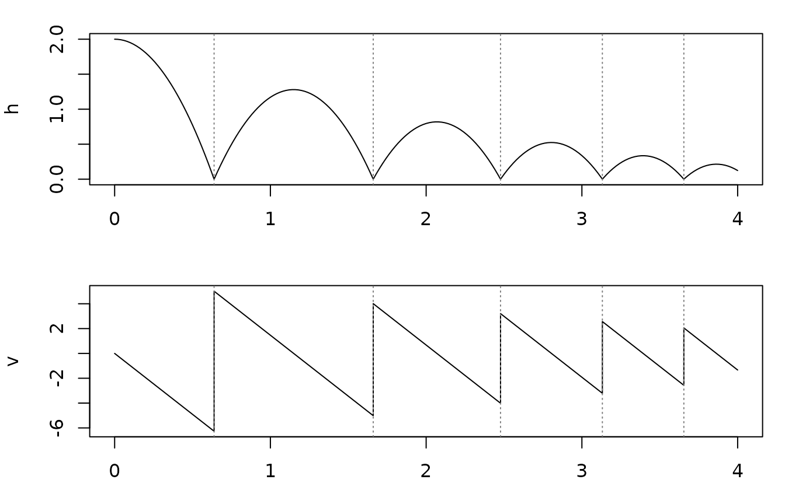
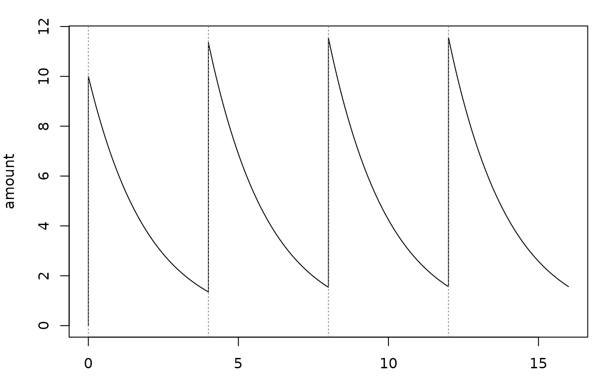
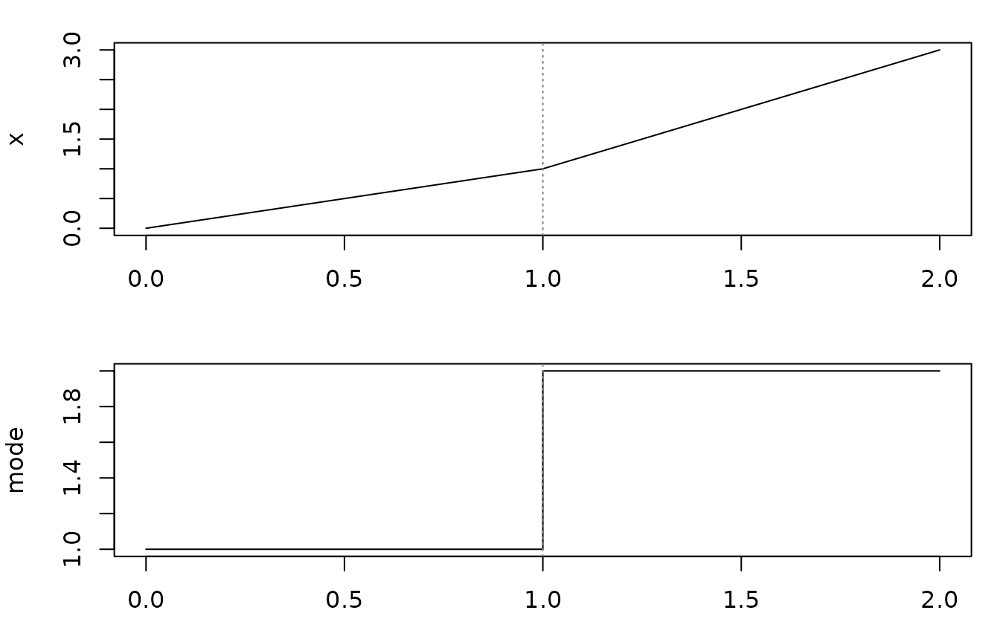
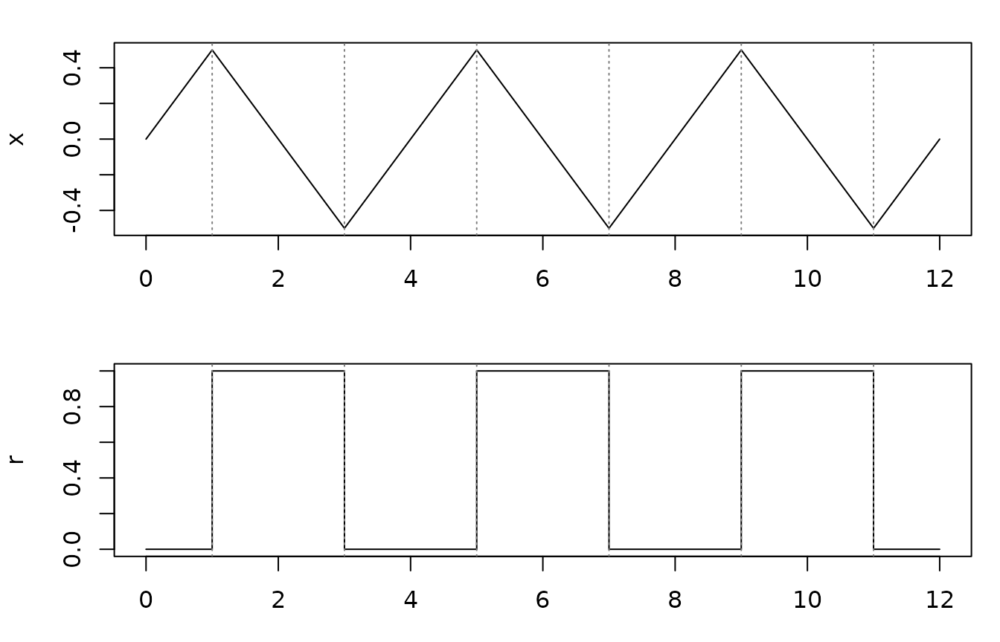

Hybrid systems combine continuous evolution with instantaneous
changes: resets, mode switches and stops. simcompR handles
them by integrating segments and stopping the solver at the
discontinuities it knows about: source breakpoints, sample hits,
scheduled events and located zero crossings.
Kinds of discontinuity
| Source | Located by | Typical use |
|---|---|---|
Source breakpoints (step, pulse,
piecewise) |
known in advance | input jumps |
| Sample hits of discrete blocks | known in advance | sampled control |
sim_add_event(trigger = sim_at(...)) |
known in advance | scheduled resets |
sim_add_event(trigger = sim_zero_crossing(...)) |
root finding | impacts, thresholds |
switch, relay, stop
blocks |
root finding | mode changes, termination |
Inside a segment discrete states, held outputs and modes are frozen.
Kinks inside memoryless blocks (saturation,
dead_zone, abs, compare,
lookup) have no crossing function in this version; the
adaptive step control handles them, so put an event on the input when
the exact time matters. Zero-crossing functions are monitored by the
root finder of lsoda (or lsode,
lsodes, lsodar). When a function changes sign,
the solver stops at the crossing, the event is applied, and integration
restarts from the new state.
The bouncing ball
\dot h = v, \qquad \dot v = -g, \qquad h = 0 \text{ and falling} \Rightarrow v \leftarrow -e\,v.
ball <- sim_model("ball", params = list(e = 0.8))
sim_add_block(ball, "constant", "gravity", value = -9.81)
sim_add_block(ball, "integrator", "v", initial = 0)
sim_add_block(ball, "integrator", "h", initial = 2)
sim_connect(ball, "gravity", "v")
sim_connect(ball, "v", "h")
sim_add_event(ball, "impact",
trigger = sim_zero_crossing("h", direction = "falling"),
reset = list(v = "-e * x"))
r <- sim_run(sim_compile(ball), c(0, 4), rtol = 1e-10, atol = 1e-12)
plot(r, c("h", "v"))
sim_events(r)
#> time event type source direction
#> 1 0.6385509 impact zero_crossing h falling
#> 2 1.6602322 impact zero_crossing h falling
#> 3 2.4775773 impact zero_crossing h falling
#> 4 3.1314534 impact zero_crossing h falling
#> 5 3.6545543 impact zero_crossing h fallingThe reset is the string "-e * x": x is the
current state of block v and e a model
parameter. Reset strings are portable (they can be saved to JSON) and
are checked against a whitelist of functions.
Checking against the exact impact times
Between impacts the ball is in free fall, so impact times are known in closed form: t_1 = \sqrt{2h_0/g} and t_{n+1} = t_n + 2 v_n / g with v_{n+1} = e\,v_n.
g <- 9.81; t1 <- sqrt(2 * 2 / g); v <- 0.8 * g * t1
exact <- t1
for (i in 1:4) { exact <- c(exact, tail(exact, 1) + 2 * v / g); v <- 0.8 * v }
cbind(simulated = sim_events(r)$time[1:5], exact, error = sim_events(r)$time[1:5] - exact)
#> simulated exact error
#> [1,] 0.6385509 0.6385509 7.660539e-15
#> [2,] 1.6602322 1.6602322 1.976197e-14
#> [3,] 2.4775773 2.4775773 2.753353e-14
#> [4,] 3.1314534 3.1314534 6.483702e-14
#> [5,] 3.6545543 3.6545543 1.163514e-13The differences are event-location errors of the root finder, controlled by the tolerances; the physical model itself (free fall plus the restitution rule) is exact.
At an event the result has two rows with the same time: the state before and after the reset.
i <- which(r$kind != "sample")[1:2]
data.frame(time = r$time[i], kind = r$kind[i], v = sim_signal(r, "v")[i])
#> time kind v
#> 1 0.6385509 pre-event -6.264184
#> 2 0.6385509 post-event 5.011347Zeno behavior
With restitution e < 1 the ball
bounces infinitely often before t^{\ast} = t_1
(1 + 2e/(1 - e)). Simulating past t^{\ast} cannot succeed.
max_events stops the run honestly instead of returning a
wrong answer:
z <- suppressWarnings(sim_run(sim_compile(ball), c(0, 20), max_events = 30))
z$status
#> [1] "event_limit"
z$message
#> [1] "reached max_events = 30 at t = 5.739051; the model may be chattering or Zeno"Event direction
direction = "rising" fires only when the watched signal
goes from negative to positive. Here a counter is incremented on each
upward crossing of a sine wave; downward crossings are ignored:
cnt <- sim_model("counter")
sim_add_block(cnt, "sine", "s")
sim_add_block(cnt, "constant", "zero", value = 0)
sim_add_block(cnt, "integrator", "count")
sim_connect(cnt, "zero", "count")
sim_add_event(cnt, "up", sim_zero_crossing("s", direction = "rising"),
reset = list(count = "x + 1"))
r <- sim_run(sim_compile(cnt), c(0.1, 20))
sim_events(r)$time / (2 * pi)
#> [1] 1 2 3Scheduled resets
dec <- sim_model("dosing")
sim_add_block(dec, "integrator", "amount", initial = 0)
sim_add_block(dec, "gain", "elim", gain = -0.5)
sim_connect(dec, "amount", "elim")
sim_connect(dec, "elim", "amount")
sim_add_event(dec, "dose", sim_at(c(0, 4, 8, 12)), reset = list(amount = "x + 10"))
r <- sim_run(sim_compile(dec), c(0, 16))
plot(r, "amount")
Mode switching with switch
A switch passes its first input while its control input
satisfies the criterion and its third input otherwise. Its mode is a
discrete state that changes only at located crossings, so the solver
never integrates across the switch:
sw <- sim_model("switched")
sim_add_block(sw, "integrator", "x")
sim_add_block(sw, "constant", "fast", value = 2)
sim_add_block(sw, "constant", "slow", value = 1)
sim_add_block(sw, "switch", "mode", threshold = 1, criterion = ">=")
sim_connect(sw, "fast", "mode", input = 1)
sim_connect(sw, "x", "mode", input = 2)
sim_connect(sw, "slow", "mode", input = 3)
sim_connect(sw, "mode", "x")
r <- sim_run(sim_compile(sw), c(0, 2))
sim_events(r)
#> time event type source direction
#> 1 1 mode block mode rising
plot(r, c("x", "mode"))
Hysteresis with relay
A relay turns on above on_point and off below
off_point. Used as a bang-bang controller it produces a
limit cycle whose period follows from the slopes: here x' = 0.5 - \text{relay}(x) alternates
between slopes \pm 0.5 over a band of
width 1, a period of 4.
rl <- sim_model("relay")
sim_add_block(rl, "integrator", "x")
sim_add_block(rl, "relay", "r", on_point = 0.5, off_point = -0.5)
sim_add_block(rl, "constant", "bias", value = 0.5)
sim_add_block(rl, "subtract", "rhs")
sim_connect(rl, "x", "r")
sim_connect(rl, "bias", "rhs", input = 1)
sim_connect(rl, "r", "rhs", input = 2)
sim_connect(rl, "rhs", "x")
r <- sim_run(sim_compile(rl), c(0, 12))
diff(sim_events(r)$time)
#> [1] 2 2 2 2 2
plot(r, c("x", "r"))
Stopping
A stop block ends the simulation when its input rises
above its threshold; a terminal event does the same for any watched
signal. The result is marked "terminated", which counts as
success.
st <- sim_model("until_half")
sim_add_block(st, "integrator", "x", initial = 1)
sim_add_block(st, "gain", "k", gain = -1)
sim_connect(st, "x", "k")
sim_connect(st, "k", "x")
sim_add_event(st, "half", sim_zero_crossing("x", level = 0.5), terminal = TRUE)
r <- sim_run(sim_compile(st), c(0, 10))
c(status = r$status, end = max(r$time), exact = log(2))
#> status end exact
#> "terminated" "0.693147624240805" "0.693147180559945"Simultaneous events
Events that fire at the same instant are applied in increasing
priority, then by name, each seeing the state left by the
previous one. Block crossings (switch, relay, stop) are handled before
model events. At a segment boundary the order is: scheduled events, then
sample hits, then mode refresh.
Retriggering
After a reset the watched function is usually exactly at, or within
round-off of, zero. A function whose value at the start of a segment is
within zc_tol of zero is treated as starting at zero, so
the same root is not detected twice. A crossing in the ignored direction
restarts the solver without any action.